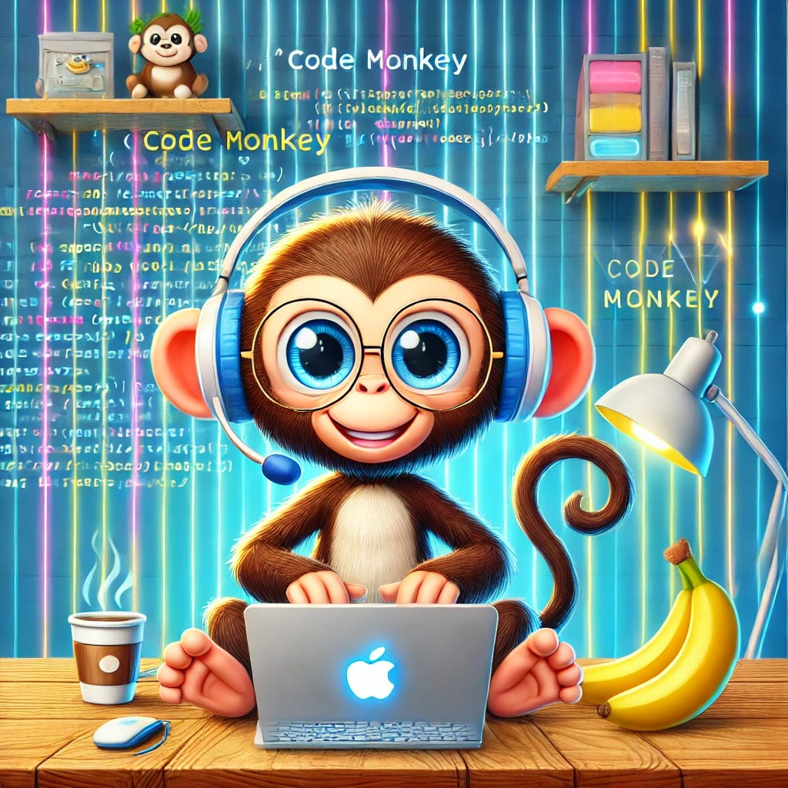

I just saw this Tweet:
~9.5% of software engineers do virtually nothing: Ghost Engineers (0.1x-ers) — Yegor Denisov-Blanch
Although I haven’t seen the details of the analysis method, I’m rather certain that this analysis to a large degree just looked at lines of code as a performance metric. I’m against any performance metric in software engineering as it’s just so easy to game the system. Let me show you how to become a 10x engineer 😄
Please note: Some of those add value, but the amount of value added likely does not correlate with the metric.
Lines of Code
- Make automated formatting changes. Change your mind about which type of formatting you like best for extra lines.
- Commit auto-generated files like an OpenAPI JSON schema file.
- Make super long comments.
Number of Commits
- Just work on tiny changes
- Don’t finish your work — just add the fix later
- Add tests in a separate commit
Number of PRs
Basically the same as for commits. If it’s not about merged PRs, then you can just open PRs and close them again 😄
On a more serious note, there are also some hints that can boost your productivity:
Use Asynchronous Communication Wisely
E-Mails should be seen asynchronously and I tend to see the beginning of a chat conversation the same way. If you’re not involved in a chat discussion, it can be valuable to not answer an incoming message right away. I haven’t used this on purpose so far, but I’ve noticed when I didn’t answer a chat message within ~10 minutes, quite often the problem was either resolved or there was valuable additional information.
However, it’s also helpful if you can give tips quickly. So you need to decide if it’s better to continue your current work or to interrupt and support a team member.
Use LLMs for Code Monkey work
LLMs such as ChatGPT can do some tedious tasks very well. For example, I tend to forget how to do a negative lookahead with regular expressions (RegEx). Instead of looking it up, I now just ask ChatGPT.
Another example is formatting diffs. Sometimes test cases fail and the diff output is hard to read. There are nice libraries such as pytest-icdiff, but that doesn’t always help.
The third category is debugging. Sometimes I’m stuck with super dumb mistakes as I went blind to a typo. Giving ChatGPT the Traceback and the relevant part of the code typically helps to find the issue.
Learn your Tools
It sounds stupid, but there might be some tiny improvements that would help you very often through the day. Things that pop to my mind:
- How to jump to a file within your editor without using the mouse
- How to jump to a line within a file
- Git blame within your editor. Also how to go to the code change before the current change
- Auto-save the current file
By the way, I’m not a big fan of pair programming. But it’s nice to learn such small tricks.